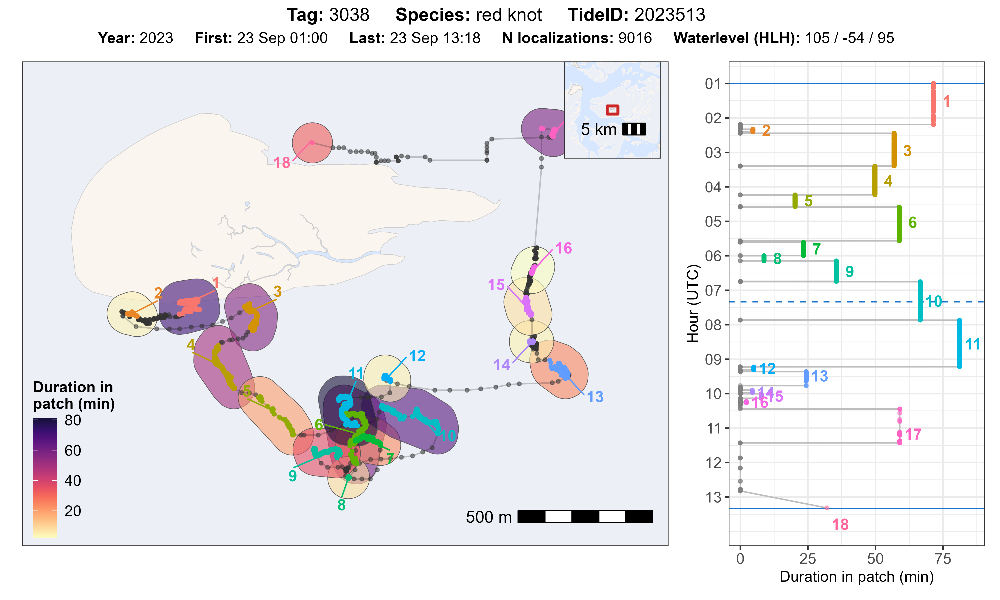
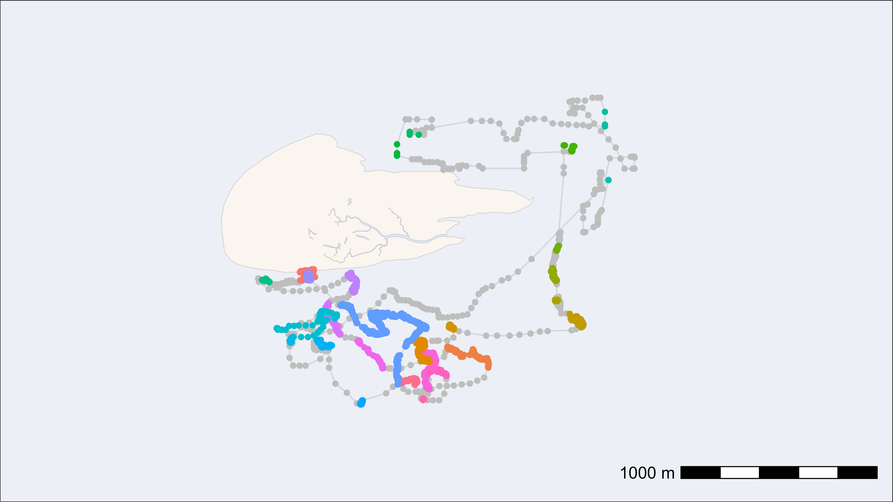

Add residency patches
Johannes Krietsch
Source:vignettes/extended_workflow/add_residency_patches.Rmd
add_residency_patches.RmdWork in progress
This vignette shows how to assign residency patches with WATLAS data.
Ignores different sampling interals and species specific residency patch parameters at the moment.
Load packages and required data
# packages
library(tools4watlas)
library(ggplot2)
library(viridis)
library(foreach)
library(doFuture)
# load example data
data <- data_example
# file path to WATLAS teams data folder
fp <- atl_file_path("watlas_teams")
# load tide pattern data
tide_data <- fread(paste0(
fp, "waterdata/allYears-tidalPattern-west_terschelling-UTC.csv"
))Calculate residency patches by tag
Subset relevant columns only (otherwise slows down the process).
# unique tag ID
id <- unique(data$tag)
# loop by tag ID
patch_data <- foreach(i = id, .combine = "rbind") %do% {
atl_res_patch(
data[tag == i, .(tag, posID, time, datetime, x, y, speed_in)],
max_speed = 3, lim_spat_indep = 75, lim_time_indep = 180,
min_fixes = 3, min_duration = 120
)
}
# extract data from all residency patches
patch_data_ext <- patch_data[, cbind(
rbindlist(lapply(patchdata, function(x) cbind(x))), duration
), by = .(tag, patch)]
# merge back with data
data <- merge(
data, patch_data_ext[, .(tag, posID, patch, duration)],
by = c("tag", "posID"), all.x = TRUE
)Plot by tag and tide ID
Example for one tag and tide
atl_check_res_patch(
tag = "3038", tide = "2023513",
data, patch_data, tide_data
)
Loop through all tags and tides
# register cores and backend for parallel processing
registerDoFuture()
plan(multisession)
# unique ID combinations
idc <- unique(data[, c("species", "tag", "tideID")])
# loop to make plots for all
foreach(i = seq_len(nrow(tag_tide))) %dofuture% {
# plot and save for each combination
atl_check_res_patch(
tag = idc$tag[i], tide = idc$tideID[i],
data, patch_data, tide_data,
filename = paste0(
"./outputs/res_patch_check/",
idc$species[i], "_tag_", idc$tag[i], "_tide_", idc$tideID[i]
)
)
}
# close parallel workers
plan(sequential)Plot residency patches (Example red knot)
# duration in minutes
patch_data[, duration := duration / 60]
# subset red knot
data_subset <- data[tag == 3038]
patch_data_subset <- patch_data[tag == 3038]
# create basemap
bm <- atl_create_bm(data_subset, buffer = 500)
# track with residency patches coloured
bm +
geom_path(data = data_subset, aes(x, y), alpha = 0.1) +
geom_point(
data = data_subset, aes(x, y), color = "grey",
show.legend = FALSE
) +
geom_point(
data = data_subset[!is.na(patch)], aes(x, y, color = as.character(patch)),
size = 1.5, show.legend = FALSE
)
# plot residency patches itself by duration
bm +
geom_point(
data = patch_data_subset,
aes(x_median, y_median, color = duration, size = duration),
show.legend = TRUE, alpha = 0.5
) +
scale_color_viridis()Plot residency patches (with species colours)
# create basemap
bm <- atl_create_bm(data, buffer = 500)
# add species
du <- unique(data, by = "tag")
patch_data <- patch_data[du, on = "tag", `:=`(species = i.species)]
# plot residency patches itself by duration and species
bm +
geom_point(
data = patch_data,
aes(x_median, y_median, color = species, size = duration),
show.legend = TRUE, alpha = 0.5
) +
scale_color_manual(
values = atl_spec_cols(),
labels = atl_spec_labs("multiline"),
name = ""
)